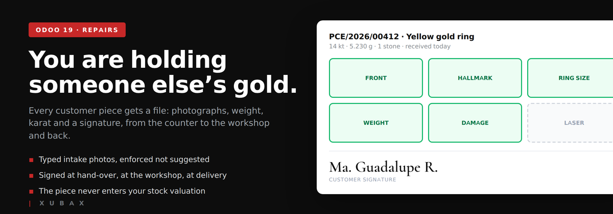
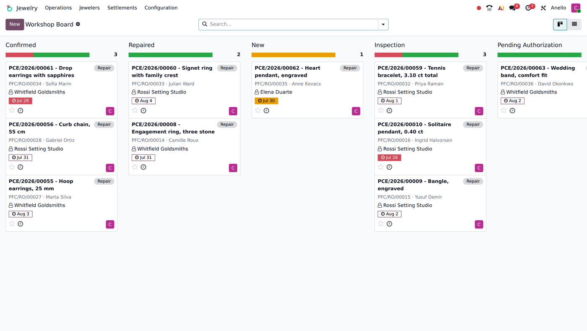
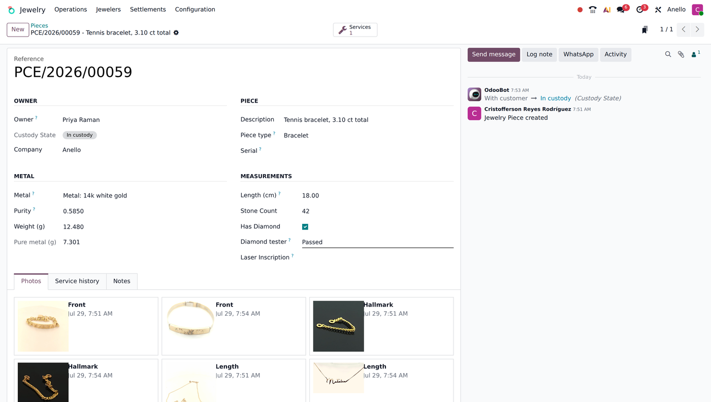
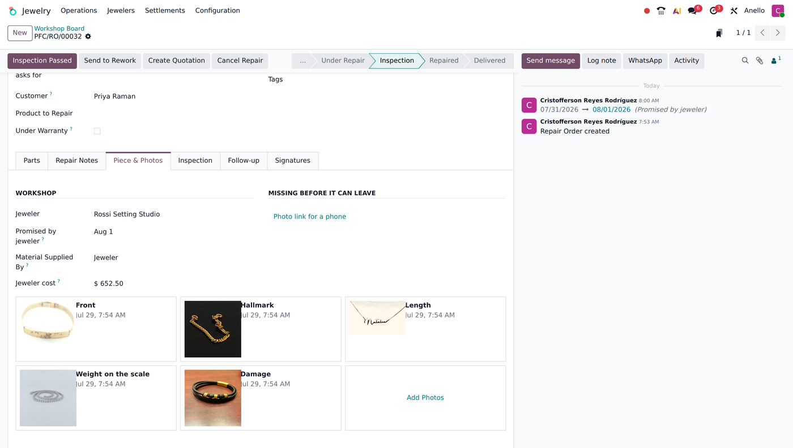
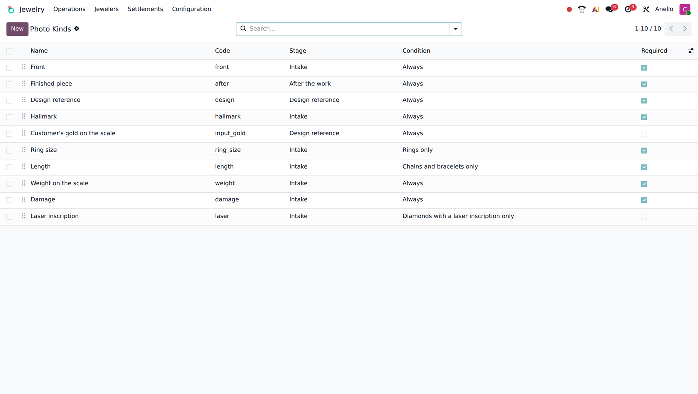
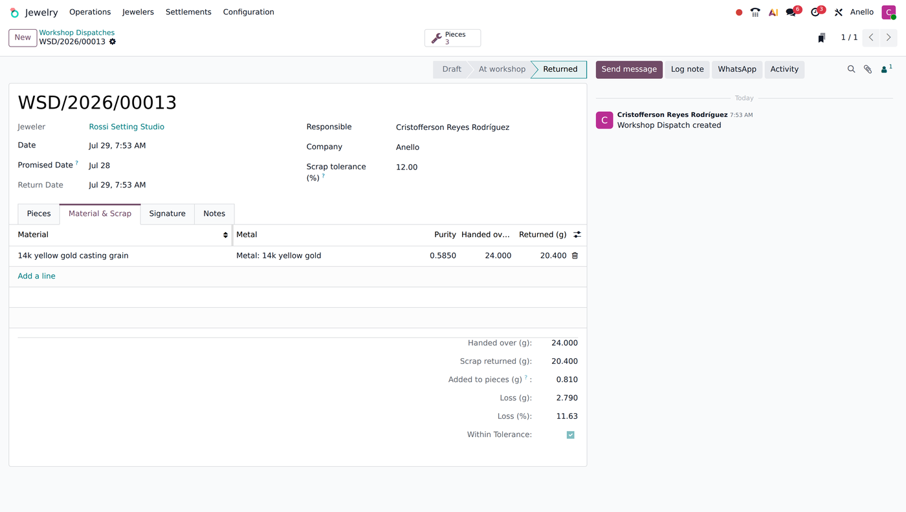
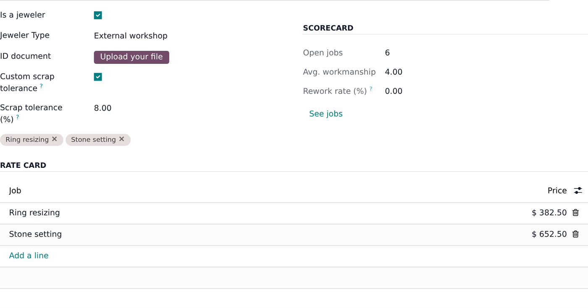
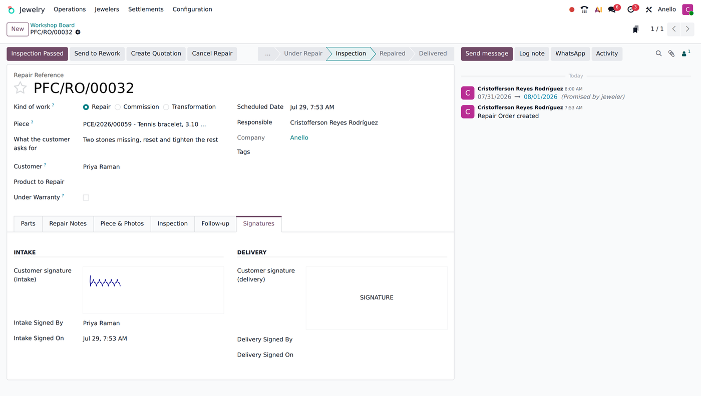
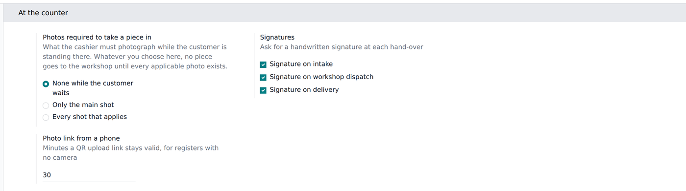

A jewellery shop takes in pieces that belong to somebody else, keeps them in a safe, hands them to a jeweller, and gives them back weeks later. If anything is different when the customer collects it, the shop has to prove what it received. This module adds that layer on top of the native Repairs app: a permanent file per piece, typed photographs, signatures at every hand-over, scrap reconciliation with the jeweller, and quality control before anything is handed back.

The board every morning: who has what, promised for when, and which pieces are already late.
The same ring comes back for service years later. It keeps its reference, its metal, its weight, its photographs and its whole service history, long after each repair is closed and archived.
A customer's gold is not your asset. Pieces are held with the owner recorded on the quant, so they can be traced through Inventory without a single gram landing on your balance sheet.

Owner, metal, fineness, pure weight, measurements, tester reading and every photograph ever taken of it — on one record that outlives the repair.
You decide the shot list, and the module holds the counter to it. The checklist adapts to the piece in hand: ring size only on rings, length only on chains, the laser inscription only when there is a diamond. A piece with a required photo missing cannot be handed to the workshop — not a warning, a block.

What is still owed before the piece may leave is written on the order itself, not left to memory.

The checklist itself is data: each shot says when it is asked for and what makes it apply.
When you supply the metal, the module weighs the whole story: what you handed over, what came back as scrap, and how much heavier the pieces are — because that difference is metal that legitimately stayed in the work. Only what is left counts as loss.
| Handed to the jeweler | 10.000 g |
| Scrap returned | − 8.500 g |
| Stayed in the pieces | − 0.600 g |
| Real loss | 0.900 g · 9% |
Tolerance cascades: company default, overridden per jeweler, overridden again on a single hand-over. Going over is logged on the record and counted on the jeweller's scorecard.

Most shops keep the karat as free text on the product, which is useless for arithmetic. Map each value of the metal attribute you already use to its fineness once, and the pure metal weight of every piece is computed from then on. No parallel list of metals, no retyping your catalogue's vocabulary.
Handwritten, on screen, at three moments: when the customer leaves the piece, when the jeweller takes it, and when it is handed back. Each one can be required or turned off.
One document per jeweller with every piece they take — from different customers if need be — their signature, the metal supplied and the date they commit to.
Rate card per jeweller, always editable on the piece. Settle job by job or run a weekly cut; external jewellers get a vendor bill out of it.


Service orders are native repair orders. Sell a repair service on a quotation and Odoo creates one order per line by itself; this module adds the states the trade needs — waiting authorization, inspection, rework, delivered — around the native ones rather than replacing them, so an upgrade of Odoo's own Repairs app does not take your workshop down with it.

How strict the counter is, is a setting: shops with a tablet ask for every shot, shops without one ask for none and let the block fall on the workshop door instead.
Jewelry Repairs & Workshop — Point of Sale: receive, look up and
deliver pieces without leaving the register.
Jewelry Repairs & Workshop — WhatsApp: tell the customer the
moment the piece is ready, and chase the ones who never come back.
Requires only Community modules: Repairs, Sales, Inventory, Invoicing.